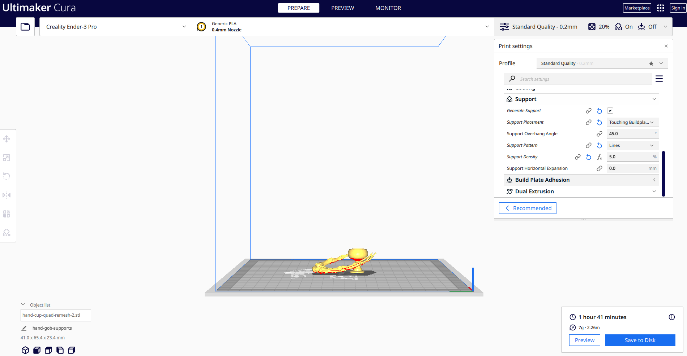

For this assignment, we needed to modify the mesh of two STLs to produce a single printable STL.
I spent an outrageous amount of time scrolling Thingiverse, and finally landed on combining a skeleton hand and a goblet. I wanted the skeleton hand to be daintily holding the goblet between its fingers. Been having a real claw moment lately.
I imported both STLs into Rhino, scaled them each to be more proportional to each other (the hand was waaay smaller), and took a closer look at the mesh. The hand was in a bunch of separate meshes, so it was difficult to move and manipulate as a whole, so I joined them to form a single mesh hand. Otherwise, the meshes seemed to be in good shape, I didn't clock any dreaded open polysurfaces. Most of my time combining them was spent moving, scaling, and rotating to get the angle, sizing, and fit solid. I mirrored the hand after reading on Thingiverse make review that it needed less supports printed that way. No matter what I did though, its fingers kept poking through the stem or the cup of the goblet, so I ended up turning PointsOn for the goblet, selecting the base points via SelBrush and moving them down, then selecting the top points via SelBrush and moving them up. The goblet stem angles got a lil freaky...but it's already a skeleton hand holding a goblet, so freaky felt right. Then I turned PointsOff for the goblet, selected both the hand and goblet, and ran QuadRemesh. Rhino called it a closed mesh and I didn't see any bright blue peaking through anywhere (I customized the color for my backfaces like Nadya showed us in class), so I exported it as a single STL.

I wanted to see if the STL I'd created was genuinely printable, so I imported the STL into Cura and decided to slice it up. I'd tried to print a mushroom with supports earlier and they got stuck to it, so I did a little more research into what settings to use for more easily removable supports, found this article, and sliced it with a support density of 5%, support pattern of "lines", and support placement of "touching buildplate".
It printed! And the supports did mostly come off this time...but still not super cleanly.